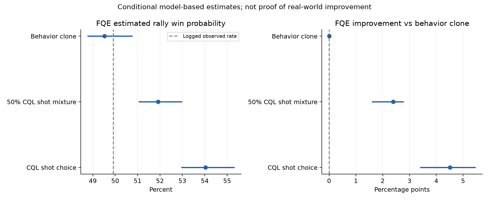
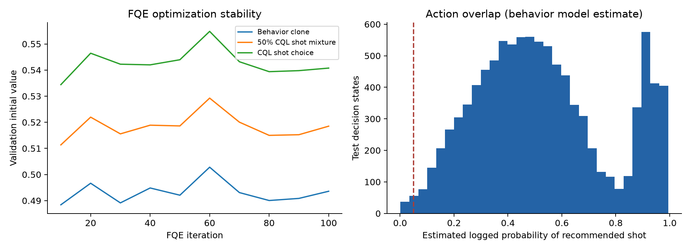

2026년 10월 13일 · FQE + Sequential DR · 경기 단위 bootstrap 100회
관측된 랠리에서 각 선수의 첫 의사결정 상태를 시작점으로 두고, 그 선수만 CQL의 타구 종류 추천을 따른다면 랠리 승리 가능성이 어떻게 달라지는지 추정했다. 상대는 기록에서 학습한 반응을 유지한다. 리시버 시작점은 관측 서브를 받은 상태에 조건부이며, 양 선수를 동시에 교체한 자가 대결이 아니다.
CQL의 (타구, 착지 구역) 중 구역은 실제 결과다. 이를 의도한 목표와 같다고 보고 완벽한 실행을 가정하지 않도록, 평가 행동을 타구 종류로 축소했다. 착지 구역, 아웃·네트, 상대 반응은 그 타구가 실제로 낳은 결과로 남겼다. 세 정책은 관측 행동을 복원한 확률 정책, 매 의사결정에서 50% 확률로 CQL 추천을 채택하고 나머지는 복원 정책을 따르는 정책, CQL 추천 타구를 항상 고르는 정책이다. 같은 종류 타구 안의 구역 선택은 평가하지 않았다.
테스트 시작 상태에서 관측 승리율은 49.92%였다. 기준 행동모형에 대한 FQE와 이 값의 차이는 -0.40%p다. 기준 비교는 관측 승률 자체가 아니라 관측 행동을 복원한 정책에 대한 FQE다.
| 정책 | 평가법 | 추정(%) | 95% 하한 | 95% 상한 | 차이(%p) | 차이 하한 | 차이 상한 |
|---|---|---|---|---|---|---|---|
| behavior_clone | fqe | 49.52 | 48.78 | 50.74 | 0.00 | 0.00 | 0.00 |
| behavior_clone | dr | 49.39 | 48.69 | 51.36 | 0.00 | 0.00 | 0.00 |
| cql_shot_mix_50 | fqe | 51.92 | 51.06 | 52.96 | 2.39 | 1.61 | 2.76 |
| cql_shot_mix_50 | dr | 52.20 | 46.70 | 59.41 | 2.81 | -3.19 | 9.65 |
| cql_shot | fqe | 54.03 | 52.97 | 55.30 | 4.51 | 3.41 | 5.45 |
| cql_shot | dr | 57.24 | 40.18 | 78.53 | 7.85 | -9.72 | 29.30 |
95% 범위는 경기 단위 percentile bootstrap 구간이다. 고정 CQL·GRU·마스크 및 추정모형에 조건부이며, 숨은 교란·모형 오류·정책 선택 불확실성은 포함하지 않는다. DR은 보정 추정량이라 0–100% 범위를 벗어날 수 있으며 임의로 잘라내지 않았다.

| split | matches | rallies | rows | episodes | retained_z0 | retained_cql_excluded_rows | excluded_rallies |
|---|---|---|---|---|---|---|---|
| train | 62 | 4008 | 42690 | 7982 | 3129 | 6199 | 27 |
| validation | 14 | 872 | 10054 | 1734 | 618 | 1394 | 4 |
| test | 15 | 963 | 10009 | 1915 | 639 | 1332 | 3 |
행동모형과 FQE는 train만으로 학습했다. validation은 학습 진행 진단에만 사용했고, 고정한 100회 반복의 결과를 test에서 평가했다. test를 이용한 정책 재선택이나 하이퍼파라미터 조정은 하지 않았다. 기존 test는 과거 프로젝트 검토에 사용됐으므로 완전히 새로운 확인 자료라고 부르지 않는다. 학습 데이터는 CQL 정책 학습과 공유하며, 독립 평가 네트워크와 held-out 시작 상태를 사용한 것이다.
CQL이 제외한 타구와 Z0도 평가에는 보존했다. 시간·타구자·연결 구조에 문제가 있는 랠리는 통째로 제외해 궤적 중간이 끊기지 않게 했다. 최근 원본 감사의 비증가 프레임 랠리 제외 적용: True. CQL의 t→t+2 시간 검사만으로 놓친 프레임 순서 이상을 이 추가 감사로 제외했다. 이전 계산은 outputs/ope_cql_v2에 비교용으로 보존했다. 제외는 승률 점수가 아니라 기존 원본 품질 플래그로 결정했다. 상태에는 107개 기존 사전 관측 특성만 사용했고 현재 타구·착지 결과·최종 랠리 길이·승패 라벨을 입력하지 않았다.
FQE는 고정 정책별 별도 신경망으로 Q를 [0,1] 안에서 추정했다. 보상은 종결 승리 1·패배 0, 할인율은 1이다. 따라서 CQL 자체의 할인된 Q나 이동 벌점을 승률로 변환하지 않았다. 타구 종류 행동모형은 class balancing 없이 실제 빈도로 학습했다. DR은 동일 평가모형의 Bellman 잔차를 행동확률 비율의 누적으로 보정하며, FQE와 독립적인 자료 출처를 제공하는 것은 아니다.
train의 경기를 복원추출해 행동모형과 세 FQE를 매번 처음부터 다시 학습하고, test 경기도 별도로 복원추출했다. 동일 반복의 정책 차이를 계산해 짝지은 구간을 만들었다. 신경망 초기화는 고정해 재표집 불확실성을 분리했다. 평가 초기화와 모형 구조의 불확실성은 별도로 남는다. 학습 중 결과와 bootstrap 행은 CSV로 보존했다.
| policy | fqe | dr | ess | nonzero_weight_episodes | wis | held_out_bellman_mse | top10_weight_fraction |
|---|---|---|---|---|---|---|---|
| behavior_clone | 0.4952 | 0.4939 | 1915.0000 | 1915 | 0.4992 | 0.0480 | 0.0052 |
| cql_shot_mix_50 | 0.5192 | 0.5220 | 321.7338 | 1915 | 0.5251 | 0.0484 | 0.1243 |
| cql_shot | 0.5403 | 0.5724 | 37.3485 | 302 | 0.5956 | 0.0492 | 0.3616 |
추천 타구의 추정 관측 확률이 5% 미만인 test 상태 비율: 0.65%. 같은 이전 타구·위치 문맥에서 학습 관측이 20회 미만인 비율: 0.24%. 궤적 중요도 가중치의 ESS가 작다면 DR/WIS가 소수 랠리에 의존한다. 행동확률은 전문가의 알려진 무작위 선택 확률이 아니라 추정값이다.
Validation 관측 승리율은 49.77%, 기준 FQE는 49.36%다. 마지막 10회 반복에서 CQL FQE validation 값의 변화는 0.10%p였다. 평균 보정 일치만으로 모든 상황의 보정이나 수렴이 보장되지는 않는다.
기준 FQE의 test 시작 상태 승패 구분 AUC는 0.5115, Brier는 0.2502다. 이번 시작 상태의 승패 구분 성능은 낮으며, 평균 승률 보정이 맞는 것만으로 정책 간 차이를 신뢰할 수는 없다. 아래 표는 예측값 5분위별 비교이며 확률은 0–1 단위다. 이는 관측 행동 복원 정도의 진단이며 새로운 정책의 인과효과 검증을 대신하지 않는다.
| prediction_bin | predicted_win | observed_win | episodes |
|---|---|---|---|
| (0.4045, 0.4882] | 0.4756 | 0.4909 | 383 |
| (0.4882, 0.4971] | 0.4947 | 0.4856 | 383 |
| (0.4971, 0.4976] | 0.4974 | 0.4804 | 383 |
| (0.4976, 0.498] | 0.4978 | 0.5248 | 383 |
| (0.498, 0.5823] | 0.5108 | 0.5144 | 383 |

{
"behavior_mean_calibration_within_3pp": true,
"last_10_iteration_validation_change_within_2pp": true,
"pure_policy_trajectory_ess_at_least_10pct_or_30": false,
"fqe_improvement_lower_bound_positive": true,
"dr_improvement_lower_bound_positive": false
}위 조건은 결과 해석을 위한 진단 기준이며 인과 식별 또는 통계적 보장을 제공하는 검정이 아니다.
| role | policy | fqe | dr | observed_win | episodes |
|---|---|---|---|---|---|
| receiver | behavior_clone | 0.4930 | 0.4901 | 0.4947 | 952 |
| receiver | cql_shot | 0.5359 | 0.5976 | 0.4947 | 952 |
| receiver | cql_shot_mix_50 | 0.5157 | 0.5199 | 0.4947 | 952 |
| server | behavior_clone | 0.4975 | 0.4976 | 0.5036 | 963 |
| server | cql_shot | 0.5447 | 0.5474 | 0.5036 | 963 |
| server | cql_shot_mix_50 | 0.5226 | 0.5240 | 0.5036 | 963 |
| policy | estimator | estimate_before | delta_vs_behavior_before | estimate_audited | delta_vs_behavior_audited |
|---|---|---|---|---|---|
| behavior_clone | fqe | 0.4907 | 0.0000 | 0.4952 | 0.0000 |
| behavior_clone | dr | 0.4964 | 0.0000 | 0.4939 | 0.0000 |
| cql_shot_mix_50 | fqe | 0.5123 | 0.0216 | 0.5192 | 0.0239 |
| cql_shot_mix_50 | dr | 0.5206 | 0.0242 | 0.5220 | 0.0281 |
| cql_shot | fqe | 0.5322 | 0.0415 | 0.5403 | 0.0451 |
| cql_shot | dr | 0.6140 | 0.1176 | 0.5724 | 0.0785 |
FQE의 양의 차이는 관측 자료와 모형 가정 아래에서 타구 선택을 바꿀 가능성을 보여준다. 확정적인 실제 승률 상승을 주장하려면 상태에 없는 선수 기량·타구 난도 등의 교란, 정책에 따른 상대 반응 변화, 실행 가능성, 새로운 경기군에서의 재현을 추가 확인해야 한다. 특히 현재 자료로는 누적 에너지 최적 전략과 예산 소진 패배 가정을 검증할 수 없다. 다음에는 정책을 고정한 새 경기군에서 재평가하고, 행동확률이 낮은 상황은 관측 전략으로 복귀하는 정책을 미리 정의해 평가할 수 있다.
.\.venv-gru\Scripts\python.exe -m src.evaluate_ope --bootstrap 100 --iterations 100 --behavior-epochs 25
.\.venv-gru\Scripts\python.exe scripts/report_ope.py
.\.venv-gru\Scripts\python.exe -m unittest tests.test_ope tests.test_cql_v2_pipeline -v — 12개 통과.
기존 정책·학습 결과는 수정하지 않았다. 정책 체크포인트 SHA-256 불변 확인: True. 입력과 소스 해시는 protocol.json, 평가모형은 evaluators.pt, 상세 결과는 summary.csv와 test_episode_estimates.csv에 있다.
방법 근거: Hao et al. (2021), Bootstrapping Fitted Q-Evaluation; Jiang & Li (2016), Doubly Robust Off-policy Value Evaluation. 해당 논문의 이론적 보장을 이 비선형 신경망·추정 행동확률에 그대로 적용하지 않는다.